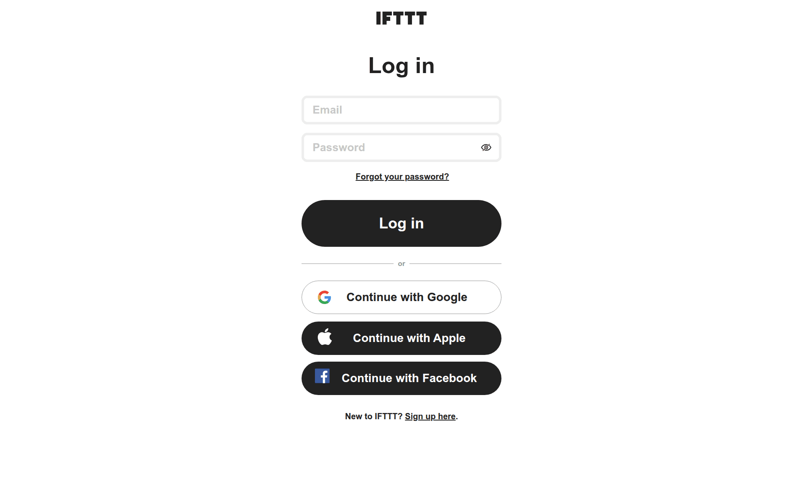
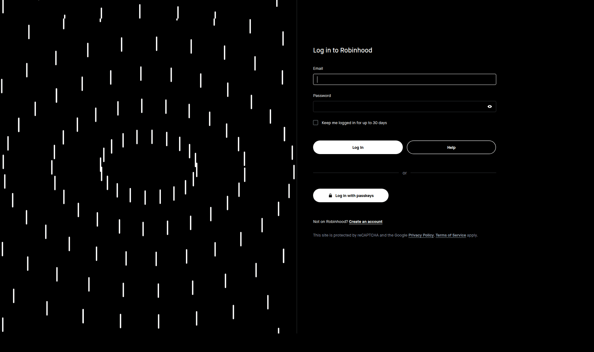
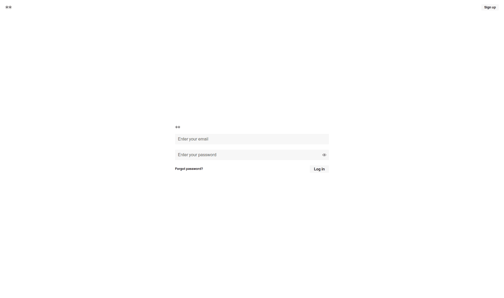
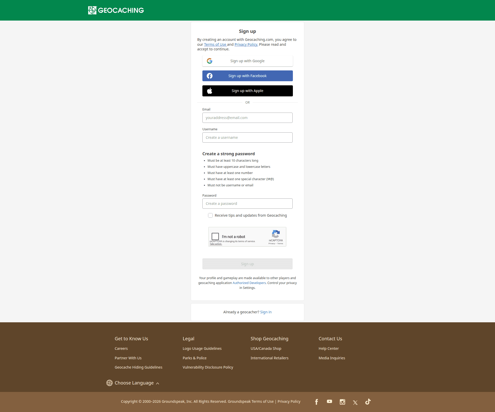
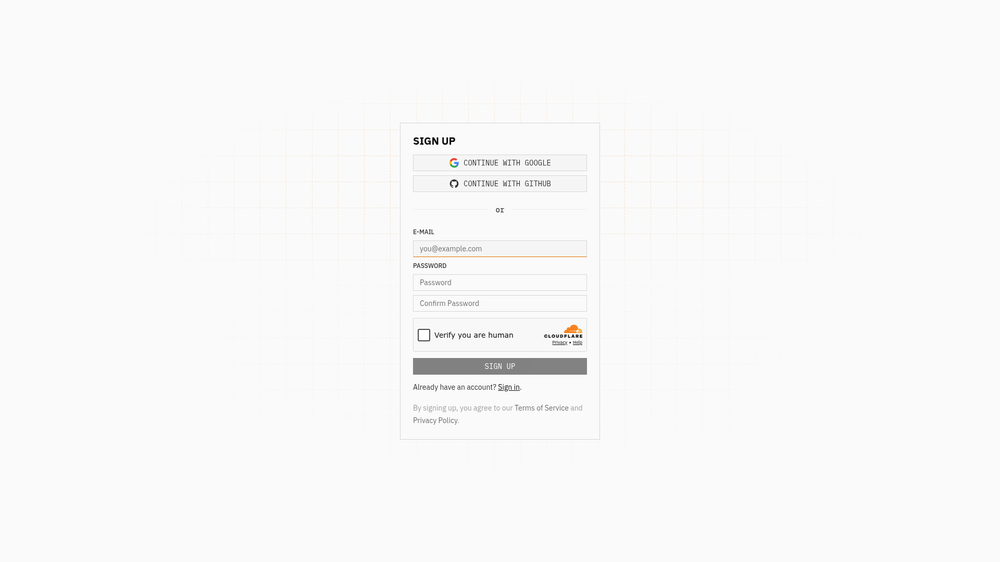
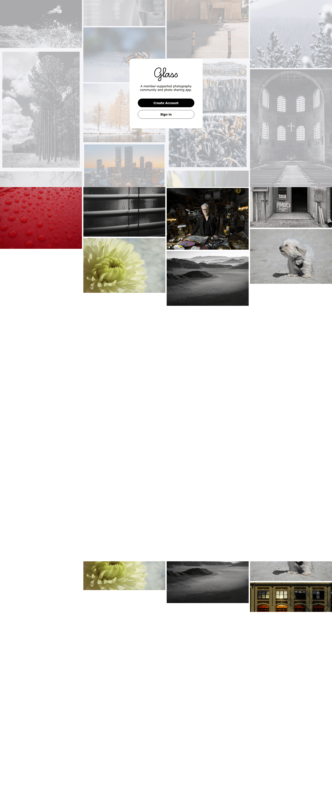
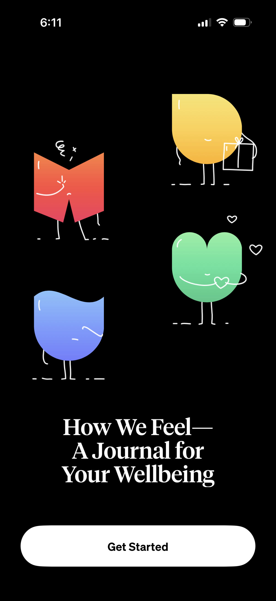
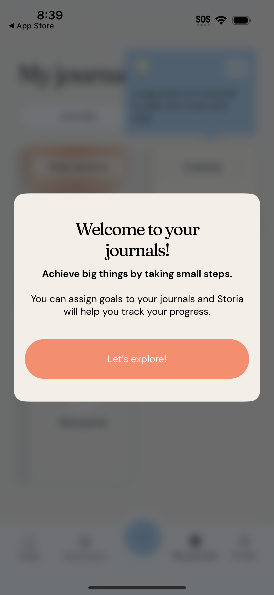

사용자 첫 진입 경험(로그인 · 회원가입)을 lazyweb의 실제 서비스 레퍼런스와 비교 분석
현재 로그인/회원가입 화면은 Bootstrap 카드 기반의 표준적이고 안정적인 폼이지만,
업계 베스트 프랙티스(비밀번호 표시 토글·소셜 로그인·실시간 검증·온보딩 플로우)가 거의 비어 있어
첫 인상의 신뢰도와 가입 전환율에서 손해를 보고 있습니다.
특히 login.html에 테스트 계정이 평문 노출되어 있어 즉시 제거가 필요합니다.
apps/users/templates/users/login.html:22 apps/users/templates/users/login.html:32
{{ form.username }} TestID: test3
{{ form.password }} TestPWD: tttt1234
템플릿 입력 필드 옆에 실제 사용 가능한 자격증명이 텍스트로 출력됩니다.
일반 사용자가 보면 보안 의구심이 들고, 운영 환경에 그대로 배포되면 누구나 해당 계정으로 로그인 가능합니다.
개발용 자동 채움이 필요하다면 DEBUG=True일 때만 출력하도록 분기하거나 placeholder로 옮기세요.
참고: are.na · ifttt 등 모든 레퍼런스는 자격증명을 노출하지 않습니다.
비밀번호 입력 시 오타 확인 수단이 없어 모바일/태블릿에서 입력 실패율이 높아집니다.
참고: ifttt, are.na 모두 password 필드에 👁 토글 제공.
한국 사용자 대상 서비스에서 카카오 로그인 부재는 가입 이탈의 주요 원인입니다.
django-allauth 도입으로 1주일 내 적용 가능.
참고: geocaching · e2b 회원가입 화면은 Google/Apple/Facebook 버튼을 form 상단에 배치.
일기 앱은 매일 접속하는 서비스이므로 세션 유지 옵션이 사용성에 직결됩니다.
참고: robinhood, pandora 모두 명시적 체크박스 제공.
signup.html:56-60 비밀번호 규칙을 정적 텍스트로만 안내합니다. 실시간 강도 바(weak / medium / strong) 또는 체크리스트 인디케이터로 즉각 피드백을 주는 것이 표준입니다.
참고: geocaching 회원가입은 비밀번호 요구사항을 동적 체크리스트로 표시.
회원가입 직후 바로 빈 일기 목록으로 떨어집니다. "오늘 첫 일기 쓰기" CTA, 앱 핵심 가치 한 줄, 샘플 일기 제안 등의 환영 화면이 없으면 첫날 이탈률이 매우 높습니다.
참고: Day One Journal · How We Feel · Storia — 모두 첫 진입 시 가치 제안 + 단일 CTA.
signup.html:29 "10자 이하"는 너무 짧습니다(이메일 alias조차 안 됨). 표준은 30자(Django 기본). 한국 사용자는 닉네임에 5~12자를 자주 사용.
현재는 submit 후에만 에러 표시. 사용자명 중복 / 이메일 형식을 blur 시점에 비동기 검증하면 폼 완료 시간이 단축됩니다.
login.html:8 col-lg-4는 27% 폭 — 1440px 화면에서 폼이 외롭게 떠 보입니다.
col-lg-5 + 좌측에 브랜드 일러스트/태그라인을 두는 split layout 추천.
참고: glass.photo welcome — 좌측 콜라주 + 우측 카드 split.
비밀번호 입력 중 Caps Lock이 켜져 있으면 작은 경고 아이콘 표시 — 1줄 JS로 큰 UX 개선.
모든 라벨이 {% trans %} 처리되어 있어 다국어 확장이 즉시 가능합니다.
로그인 폼 하단에 두 링크 모두 노출 — 표준 패턴 충족.
제출 시 showOverlay()로 사용자 액션 피드백 제공. 이중 제출 방지.
아래는 lazyweb에서 매칭한 실제 서비스의 인증 화면입니다. 각 카드의 패턴을 우리 화면에 적용 가능한지 비교해 보세요.

IFTTT
이메일 + 비밀번호, 👁 토글, "Forgot password?"
password toggle
Robinhood
Keep me logged in 체크 + 패스키 옵션 + 가입 링크
remember me
Are.na
미니멀 — 로고 · 두 필드 · 토글 · CTA만
minimalist
Geocaching
소셜 3종 + 이메일 + 비밀번호 강도 체크리스트
password strength
E2B
Google/Apple 소셜 + 이메일/비번/확인 + 약관 체크
social signup
Glass
배경 콜라주 + 중앙 가치 제안 카드 + 단일 CTA
split welcome
How We Feel
일러스트 + 한 문장 가치 제안 + Get Started 단일 버튼
first-run welcome
Storia (Journal)
목표 설정 · 진행도 트래킹 소개 모달 + Let's explore!
value intro modal| # | 액션 | 임팩트 | 공수 | 상태 |
|---|---|---|---|---|
| 1 | 로그인 화면 테스트 계정 평문 제거 | 보안 / 신뢰 | S · 30분 | ✅ 완료 · 8bab90d |
| 2 | 비밀번호 👁 토글 + Caps Lock 안내 (login·signup) | 입력 성공률 ↑ | S · 2시간 | ✅ 완료 · 2026-05-07 |
| 3 | "로그인 상태 유지" 체크박스 + Django session 연동 (30일) | 재방문율 ↑ | S · 1시간 | ✅ 완료 · 2026-05-07 |
| 4 | 비밀번호 강도 실시간 인디케이터 (자체 구현, ~3KB) | 가입 완료율 ↑ | S · 1시간 | ✅ 완료 · 2026-05-07 |
| 5 | 사용자명 10자 → 30자 완화 (마이그레이션 불요: 기본 User.username 150자) | 가입 가능 폭 ↑ | S · 30분 | ✅ 완료 · 2026-05-07 |
| 6 | 카카오 / Google 소셜 로그인 (django-allauth) | 가입 전환율 ↑↑ | L · 1주 | ⏳ 대기 |
| 7 | 회원가입 후 환영 화면 + "첫 일기 쓰기" CTA | D1 잔존율 ↑↑ | L · 3-5일 | ⏳ 대기 |
| 8 | auth-card split layout (좌측 브랜드 + 우측 폼) | 브랜드 인상 ↑ | M · 4시간 | ⏳ 대기 |
8bab90dauth-enhance.js · 회귀 테스트 2건password-strength.js (자체 구현 ~3KB) · 회귀 테스트 2건
본 리포트는 lazyweb MCP의 자연어 검색을 통해 매칭된 실제 운영 서비스 화면을 근거로 작성되었습니다.
레퍼런스 이미지는 docs/ui-references/auth/에 함께 저장되어 있습니다.